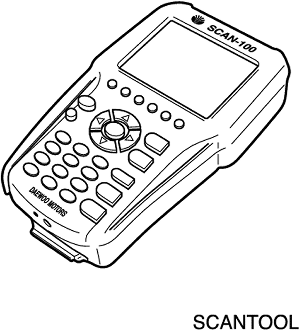
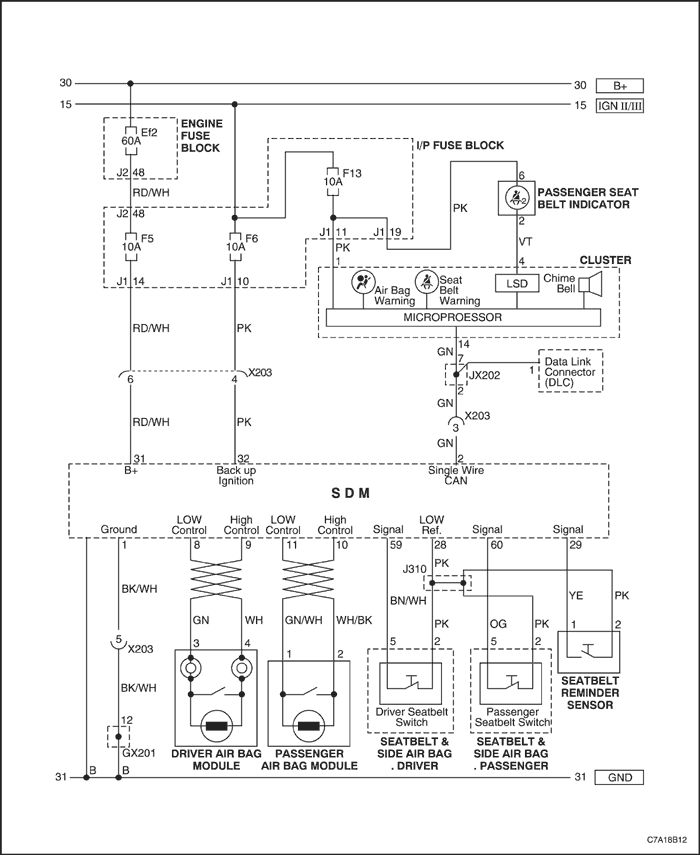
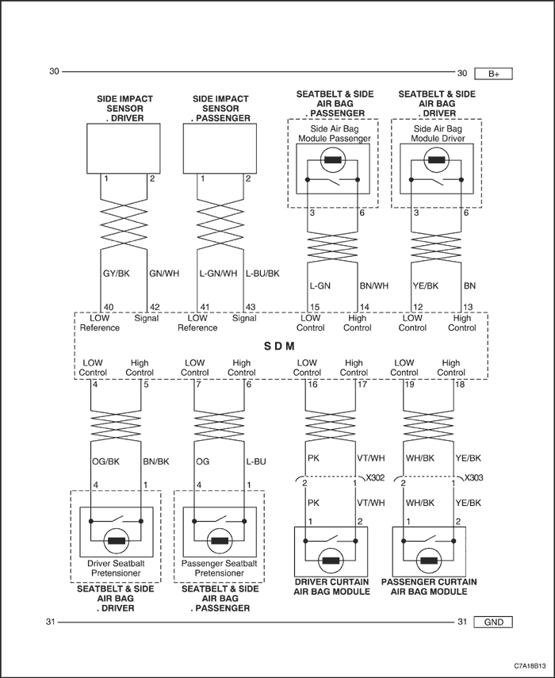
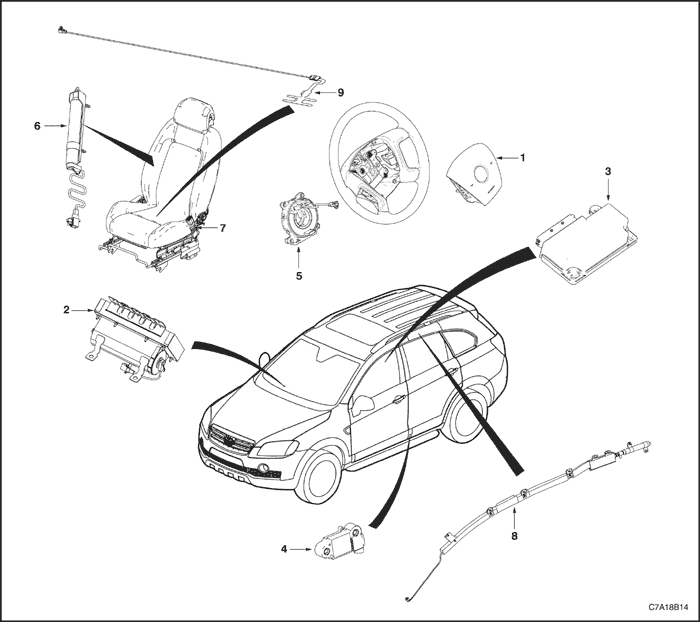
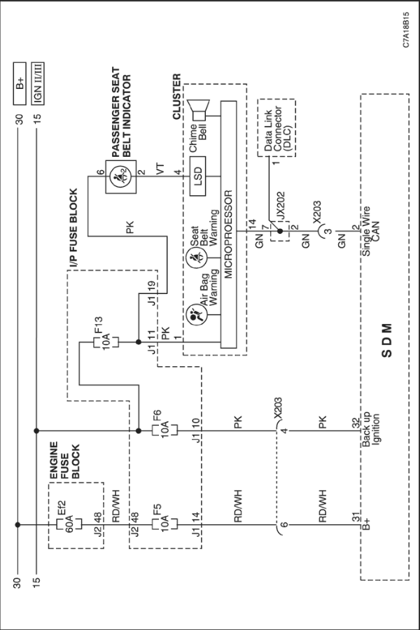

SECCIÓN 8B
SUJECIONES SUPLEMENTARIAS INFLABLES (SIR)
Precaución: Desconecte el cable negativo de la batería antes de desmontar o instalar cualquier unidad eléctrica o cuando exista la posibilidad de que una herramienta o equipo pueda entrar en contacto con bornes eléctricos expuestos. La desconexión de dicho cable ayudará a evitar lesiones personales y daños al vehículo. La llave de contacto debe estar en posición LOCK a menos que se indique lo contrario.
ESPECIFICACIONES
Especificaciones generales
Aplicación | Descripción |
Tiempo de despliegue del sistema del airbag | <20 ms |
Tiempo de detección | <5 ms |
Temperatura de funcionamiento | -40°C~+85°C |
Temperatura de almacenamiento | -40°C~+90°C |
Gama de tensiones de funcionamiento normal | 10~16,5V |
Corriente de despliegue | 1,2~1,9 A durante 2 ms |
Reserva de energía (sólo circuitos de despliegue frontales) | 75 ms después de la desconexión de la batería |
Energía de encendido del inflador | 4,3 mj |
Resistencia del cebo | 2 +/- 0.3Ω |
Tiempo de encendido de la luz de aviso del airbag (con la llave de contacto en ON) | 7 seg |
Especificaciones de apriete
| Aplicación | N·m | Lb-pie | Lb-pulg. |
| Tornillos de fijación del muelle en espiral | 1.25 | - | 11 |
| Tornillos de fijación del módulo del airbag del pasajero | 10 | 7 | - |
| Tuercas de fijación del módulo del airbag del pasajero | 10 | 7 | - |
| Tornillos de fijación del módulo de detección y diagnóstico (SDM) | 10 | 7 | - |
| Tornillos de fijación del módulo del airbag (cortinilla para la cabeza) del rail del techo | 10 | 7 | - |
| Tornillo de fijación del sensor del airbag lateral | 10 | 7 | - |
HERRAMIENTAS ESPECIALES
TABLA DE HERRAMIENTAS ESPECIALES

 
| Scanner |
DIAGRAMAS DE ESQUEMAS Y DIRECCIONES
Diagrama electrónico del sistema de sujeciones suplementarias inflables (SIR)


Localizador de componentes SIR

- Módulo de airbag del conductor
- Módulo de airbag del pasajero
- Módulo de detección y diagnóstico (SDM)
- Sensor de impactos laterales
- Muelle de reloj
- Módulo del airbag lateral
- Pretensor de la hebilla del cinturón de seguridad
- Módulo del airbag (cortinilla para la cabeza) del rail del techo
- Sensor de recordatorio del cinturón de seguridad del pasajero.
DIAGNÓSTICO
Código de diagnóstico de averías (DTC)
Cuando el módulo de detección y diagnóstico (SDM) detecta una avería, enciende el indicador de aviso del airbag y almacena los códigos de diagnóstico de averías (DTCs).
La comprobación del sistema de diagnóstico del sistema de sujeciones suplementarias inflables (SIR) debe ser siempre el punto de partida del diagnóstico de dicho sistema. La comprobación del sistema de diagnóstico revela los códigos de diagnóstico de averías (DTCs) mediante el empleo de un scanner. Comprueba asimismo si funciona correctamente la luz de aviso del airbag.
Los dos tipos de DTCs que se pueden registrar son los siguientes:
- DTCs activos que representan fallos de funcionamiento detectados durante el ciclo de encendido actual. Los DTCs activos se almacenan en la memoria de acceso aleatorio (RAM).
- DTCs históricos que representan fallos de funcionamiento detectados desde la última vez que se borró la memoria del historial. Los DTCs históricos se guardan en la memoria programable de sólo lectura de borrado eléctrico (EEPROM).
Tabla de códigos de diagnóstico de averías
DTC y descripción | Síntoma del DTC | Luz de aviso |
B0012 Circuito de despliegue frontal del lado del conductor / delantero izquierdo | Resistencia demasiado alta | Sí |
circuito abierto | . |
Resistencia demasiado baja | . |
Derivación a masa | . |
Cortocircuito con la batería | . |
B0014 Circuito de despliegue lateral del lado del conductor / delantero izquierdo | Resistencia demasiado alta | Sí |
circuito abierto | . |
Resistencia demasiado baja | . |
Derivación a masa | . |
Cortocircuito con la batería | . |
B0015 Circuito de despliegue del pretensor del lado del conductor / delantero izquierdo | Resistencia demasiado alta | Sí |
circuito abierto | . |
Resistencia demasiado baja | . |
Derivación a masa | . |
Cortocircuito con la batería | . |
B0016 Circuito de despliegue de cortinilla para la cabeza / rail de techo del lado del conductor / delantero izquierdo | Resistencia demasiado alta | Sí |
circuito abierto | . |
Resistencia demasiado baja | . |
Derivación a masa | . |
Cortocircuito con la batería | . |
B0019 Circuito de despliegue frontal del lado del pasajero / delantero derecho | Resistencia demasiado alta | Sí |
circuito abierto | . |
Resistencia demasiado baja | . |
Derivación a masa | . |
Cortocircuito con la batería | . |
B0021 Circuito de despliegue lateral del lado del pasajero / delantero derecho | Resistencia demasiado alta | Sí |
circuito abierto | . |
Resistencia demasiado baja | . |
Derivación a masa | . |
Cortocircuito con la batería | . |
B0022 Circuito de despliegue del pretensor del lado del pasajero / delantero derecho | Resistencia demasiado alta | Sí |
circuito abierto | . |
Resistencia demasiado baja | . |
Derivación a masa | . |
Cortocircuito con la batería | . |
B0023 Circuito de despliegue de cortinilla para la cabeza / rail de techo del lado del pasajero / delantero derecho | Resistencia demasiado alta | Sí |
Circuito abierto | . |
Resistencia demasiado baja | . |
Derivación a masa | . |
Cortocircuito con la batería | . |
B0052 Despliegue ordenado | - | Sí |
B0053 Despliegue ordenado con DTCs de circuito presentes | - | Sí |
B0055 Despliegue de airbag lateral ordenado | - | Sí |
B0085 Sensor de impactos laterales (SIS) del conductor / delantero izquierdo | Rechazo/fallo electrónico interno | Sí |
Componente incorrecto instalado | . |
Derivación a masa | . |
Derivación a masa o interrupción | . |
Cortocircuito con la batería | . |
Datos serie recibidos no válidos | . |
Errático | . |
B0086 Sensor de impactos laterales (SIS) del pasajero / delantero derecho | Rechazo/fallo electrónico interno | Sí |
Componente incorrecto instalado | . |
Derivación a masa | . |
Derivación a masa o interrupción | . |
Cortocircuito con la batería | . |
Datos serie recibidos no válidos | . |
Errático | . |
B1000 Rendimiento de la unidad de control electrónico (ECU) | - | Sí |
B1001 Vehículo incorrecto (el vehículo no supera la comprobación del SDM) | - | Sí |
B1019 Error de configuración del sistema del SDM | - | Sí |
B1370 Circuito de marcha / arranque (ENC1 de dispositivo) | Derivación a masa o interrupción | No |
U0073 Bus de comunicaciones desconectado del módulo de control | - | No |
U0140 Pérdida de comunicación con BCM | - | No |
U0155 Pérdida de comunicación con IPC | - | No |
Diagnóstico de herramientas de exploración
Un scanner puede leer datos serie a través del terminal 1 del conector de diagnóstico (DLC) usando el protocolo GMLAN de baja velocidad. El scanner sirve para leer códigos de diagnóstico de averías (DTC) y para borrar algunos DTCs tras llevar a cabo una reparación.
Para utilizar el scanner, gire la llave de contacto a la posición OFF, conéctelo al DLC y gire la llave de contacto a la posición ON .
Siga las instrucciones del manual del scanner. El SDM envía datos serie desde el terminal 2 del SDM hasta el terminal 1 del DLC con los demás módulos de control.
Comprobación del sistema de diagnóstico SIR
Aviso: Si el interior del vehículo se ha visto expuesto a la filtración de mucha agua, como goteras, conducción por aguas profundas, inundación u otras causas, es probable que tenga que sustituir el módulo de detección y diagnóstico (SDM) y su conector. Con la llave de contacto en posición OFF, revise el área alrededor del SDM, incluida la alfombrilla. Si hay señales evidentes de inundación o inundaciones anteriores, se debe eliminar el agua, reparar los daños producidos y sustituir el SDM y su conector. Antes de intentar cualquiera de estas reparaciones, debe desactivarse el sistema de sujeciones suplementarias inflables (SIR). Consulte los apartados "Desactivación del sistema de sujeciones suplementarias inflables (SIR)" y "Módulo de detección y diagnóstico (SDM)" de esta sección para tener más instrucciones sobre cómo desactivar el SIR y sustituir el SDM.
La comprobación del sistema de diagnóstico del SIR debe ser el punto de partida de cualquier diagnóstico del SIR. La comprobación del sistema de diagnóstico revela los códigos de diagnóstico de averías (DTCs) mediante el empleo de un scanner. Los procedimientos de diagnóstico utilizados en esta sección están diseñados para encontrar y reparar las averías del SIR. Para obtener los mejores resultados, es importante emplear las tablas de diagnósticos y seguir la secuencia indicada a continuación.
- Efectúe la comprobación del sistema de diagnóstico del SIR, que revela los códigos de diagnóstico de averías (DTCs) por medio de un scanner. Comprueba asimismo si funciona correctamente el indicador del airbag.
- Consulte la tabla de diagnóstico correspondiente como se indica en la comprobación del sistema de diagnóstico del SIR. La omisión de estos procedimientos puede llevar a un mayor tiempo de diagnóstico, a un diagnóstico incorrecto y a la sustitución incorrecta de piezas.
- Repita la comprobación del sistema de diagnóstico del SIR después de cualquier reparación o de haber realizado los procedimientos de diagnóstico para asegurarse de que la reparación se ha hecho correctamente y de que no existe ningún otro fallo.
Descripción del circuito
El SDM recibe la tensión de la batería como fuente de alimentación principal en el terminal 31 del SDM. Además, desde el bloque de fusibles del panel de instrumentos se suministra tensión de encendido al terminal 32 del SDM como fuente de alimentación auxiliar. El SDM responde haciendo parpadear la luz indicadora del airbag siete veces y apagándola después, mientras el SDM efectúa comprobaciones en el SIR.
Ayudas para el diagnóstico
El orden en que se diagnostican los DTCs es muy importante. La no realización del diagnóstico de los DTCs en el orden especificado puede aumentar el tiempo de diagnóstico y llevar a una sustitución incorrecta de piezas.
Comprobación del sistema de diagnóstico SIR
Precaución: El módulo de detección y diagnóstico (SDM) puede mantener suficiente tensión para desplegar los airbags y pretensores durante 1 minuto después de que se haya girado la llave de contacto a la posición OFF y se haya retirado el fusible. Si los airbags y los pretensores no están desconectados, no comience las labores de mantenimiento hasta que haya transcurrido un minuto desde la desconexión de la alimentación de corriente al SDM. De lo contrario, podrían producirse lesiones personales.
Precaución: Durante el procedimiento de servicio, tenga cuidado al manipular el SDM. No golpee ni haga vibrar nunca el SDM. No suministre nunca corriente al sistema de sujeciones suplementarias inflables (SIR) hasta que el SDM no esté rígidamente sujeto al vehículo. Para garantizar un funcionamiento correcto del SIR, deben apretarse cuidadosamente todos los tornillos de fijación del SDM y la flecha de este módulo debe quedar orientada hacia la parte delantera del vehículo. El SDM puede activarse si recibe corriente cuando no está bien fijado al vehículo, lo que puede provocar un despliegue inesperado del airbag y posibles lesiones.
| Paso | Medida | Valor(es) | Sí | No |
| 1 | - Gire la llave de contacto a la posición ON.
- Observe el indicador del airbag cuando se gire la llave de contacto a la posición ON. ¿Parpadea el indicador siete veces?
| - | Sistema OK | Vaya al Paso 2 |
| 2 | - Gire la llave de contacto a la posición LOCK y quite la llave.
- Enchufe un scanner al conector de diagnóstico (DLC).
- ¿Muestra el scanner algún DTC de SIR?
| - | Ir al procedimiento de comprobación del DTC | Vaya al Paso 3 |
| 3 | Compruebe el fusible Ef2 del bloque de fusibles del motor. ¿Está fundido el fusible Ef2? | - | Sustituya el fusible Ef2. | Vaya al Paso 4 |
| 4 | Compruebe el fusible F5 en el bloque de fusibles del panel de instrumentos. ¿Está fundido el fusible F5? | - | Sustituya el fusible F5. | Vaya al Paso 5 |
| 5 | - Desenchufe el conector X203.
- Compruebe si hay alguna interrupción o cortocircuito en el cableado entre el terminal 14 del bloque de fusibles del panel de instrumentos y el terminal 6 del conector X203.
¿Está el cableado abierto o en cortocircuito? Entonces, repárelo. | - | - | Vaya al Paso 6 |
| 6 | - Desenchufe el conector del SDM.
- Desenchufe el conector del SDM.
- Compruebe si hay alguna interrupción o cortocircuito en el cableado entre el terminal 31 del conector del SDM y el terminal 6 del conector X203.
- Compruebe si hay alguna interrupción o cortocircuito en el cableado entre el terminal 31 del conector del SDM y el terminal 6 del conector X203.
¿Está el cableado abierto o en cortocircuito? Entonces, sustituya el cableado del airbag. | - | - | Vaya al Paso 7 |
| 7 | - Compruebe si hay alguna interrupción o cortocircuito en el cableado entre el terminal 1 del DLC y masa.
- ¿Está el cableado abierto o en cortocircuito? Entonces, repárelo.
| - | - | Vaya al Paso 8 |
| 8 | - Asegúrese de que la llave de contacto está en la posición ON.
- Compruebe la alimentación del scanner.
¿El scanner recibe la tensión correcta? | 9 - 16 V | Vaya al Paso 10 | Vaya al Paso 9 |
| 9 | Repare la fuente de alimentación del scanner. | - | - | - |
| 10 | Compruebe si hay alguna interrupción o cortocircuito en el cableado entre el terminal 8 del conector SDM y el terminal 1 del conector de diagnóstico (DLC). ¿Está el cableado abierto o en cortocircuito? Entonces, repárelo. | - | - | Sustituya el SDM. |
Comprobación de la integridad del módulo de detección y diagnóstico (SDM)
Debe utilizarse la siguiente tabla de diagnóstico cuando se haya visto que todos los circuitos fuera del módulo de detección y diagnóstico (SDM) funcionan correctamente, como se indica en la tabla pertinente de códigos de diagnóstico de averías (DTC). En esta tabla se verifica la necesidad de sustituir el SDM.
descripción del circuito
Cuando el SDM reconoce que la tensión de batería es superior a 9 voltios en el terminal 31 del SDM, el indicador del airbag parpadea siete veces para verificar el funcionamiento. En este momento, el SDM efectúa pruebas al conectar el encendido, seguidas por mediciones de resistencia y pruebas de control continuas.
Cuando se detecta una avería, el SDM activa un DTC actual y enciende el indicador del airbag.
Cuando deje de detectarse la avería y/o el interruptor de encendido acaba el ciclo, el SDM borrará los DTCs actuales y los pasará al archivo de historial, excepto en el caso de los DTCs B0052, B0053, B0055, B1000, B1001, B1019. Estos DTCs no se borrarán utilizando el scanner ya que estos códigos requieren la sustitución del SDM. El SDM debe sustituirse solamente después de haber reparado la avería que activó el DTC.
Comprobación de la integridad del módulo de detección y diagnóstico (SDM)
Precaución: El módulo de detección y diagnóstico (SDM) puede mantener suficiente tensión para desplegar los airbags y pretensores durante 1 minuto después de que se haya girado la llave de contacto a la posición OFF y se haya retirado el fusible. Si los airbags y los pretensores no están desconectados, no comience las labores de mantenimiento hasta que haya transcurrido un minuto desde la desconexión de la alimentación de corriente al SDM. De lo contrario, podrían producirse lesiones personales.
Precaución: Durante el procedimiento de servicio, tenga cuidado al manipular el SDM. No golpee ni haga vibrar nunca el SDM. No suministre nunca corriente al sistema de sujeciones suplementarias inflables (SIR) hasta que el SDM no esté rígidamente sujeto al vehículo. Para garantizar un funcionamiento correcto del SIR, deben apretarse cuidadosamente todos los tornillos de fijación del SDM y la flecha de este módulo debe quedar orientada hacia la parte delantera del vehículo. El SDM puede activarse si recibe corriente cuando no está bien fijado al vehículo, lo que puede provocar un despliegue inesperado del airbag y posibles lesiones.
| Paso | Medida | Valor(es) | Sí | No |
| 1 | - Gire la llave de contacto a la posición LOCK y quite la llave.
- Conecte todos los componentes del SIR y asegúrese de que todos los componentes están debidamente montados.
- Asegúrese de que la llave de contacto haya estado en la posición OFF durante al menos 30 seg.
- Observe el indicador del airbag cuando se gire la llave de contacto a la posición ON. ¿Parpadea la luz indicadora siete veces?
| - | | Vaya al Paso 2 |
| 2 | - Gire la llave de contacto a la posición LOCK y quite la llave.
- Conecte el scanner al DLC.
- Gire la llave de contacto a la posición ON.
- Solicite la visualización de los DTCs del SIR con el scanner. ¿El DTC visualizado es el mismo que se había producido previamente cuando se realizó la comprobación del sistema de diagnóstico del SIR?
| - | Vaya al Paso 3 | Ir a la tabla para el DTC indicado. |
| 3 | - Borre los DTCs del SIR.
- Gire la llave de contacto a la posición OFF durante al menos 30 segundos.
- Observe el indicador del airbag cuando se gire la llave de contacto a la posición ON. ¿Parpadea la luz indicadora siete veces?
| - | Sistema OK | Vaya al Paso 4 |
| 4 | - Gire la llave de contacto a la posición LOCK y quite la llave.
- Desconecte el conector del SDM.
- Sustituya el SDM.
- Enchufe el conector del SDM y asegúrese de que todos los componentes estén debidamente montados. ¿Se ha realizado la reparación?
| - | | - |
Activo en marcha y durante el arranque
